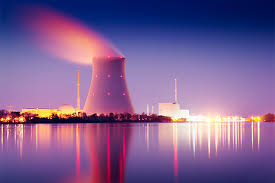

Консалтинг & Обучение
"Энергия вашего роста - в наших решениях"
Связаться с намиРазработка комплекта документов, обосновывающих безопасность лицензируемый видов деятельности в области использования атомной энергии
Предварительная оценка обоснования лицензируемых видов деятельности в области использования атомной энергии
Подготовка к контрольно-надзорным мероприятиям Ростехнадзора в области использования атомной энергии
Разработка частных программ обеспечения качества для объектов использования атомной энергии (для объектов на территории РФ и зарубежом)
Помощь в разработке комплектов конструкторской документации
Создание комплекта документации по проверке знаний руководителей и специалистов в области использования атомной энергии
AtomConsult - это команда профессионалов с многолетним опытом работы в области использования атомной энергии. Наши специалисты принимали участие в ключевых проектах отрасли в России и за рубежом, занимались контрольно-надзорной деятельностью, проектированием и сооружением объектов использования атомной энергии, конструированием и изготовлением оборудования для ядерных установок, радиационных источников и пунктов хранения ядерных материалов, радиоактивных веществ, радиоактивных отходов, пунктов захоронения радиоактивных отходов.
Мы сочетаем глубокие технические знания с пониманием регуляторных требований, чтобы предложить нашим клиентам наиболее эффективные решения.

I. Официальные сайты Федеральной службы по экологическому, технологическому и атомному надзору и ее межрегиональных территориальных управлений по надзору за ядерной и радиационной безопасностью:
II. Техническое регулирование РОСАТОМ (Государственная корпорация по атомной энергии «Росатом»)
III. АО «Концерн Росэнергоатом»
IV. Предприятия ядерного топливного цикла
V. Проверка лицензий в области использования атомной энергии на сайте Ростехнадзора